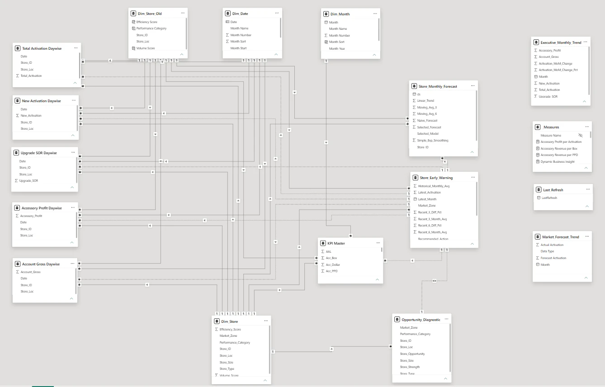
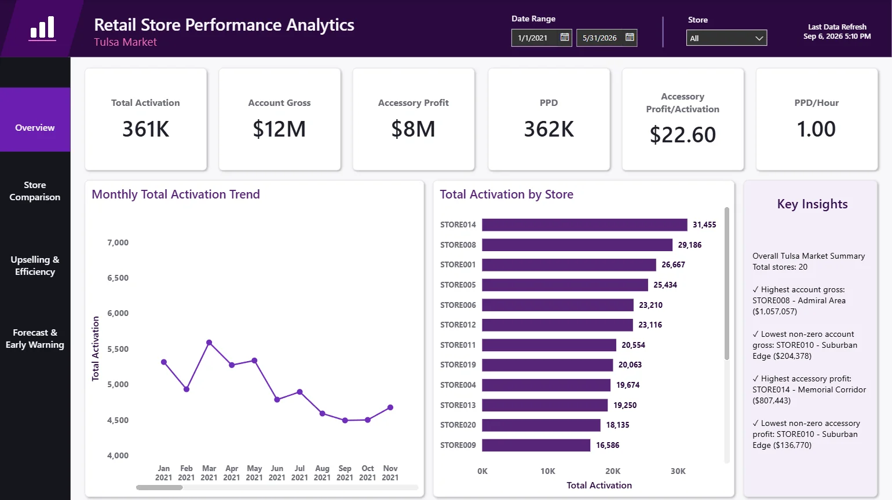
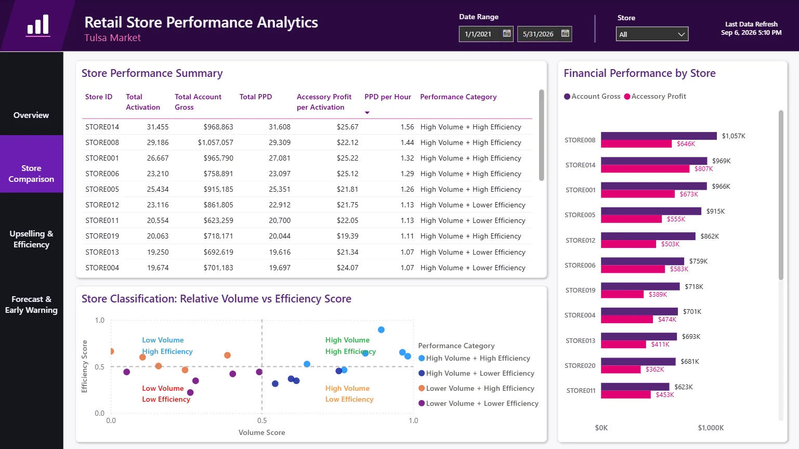
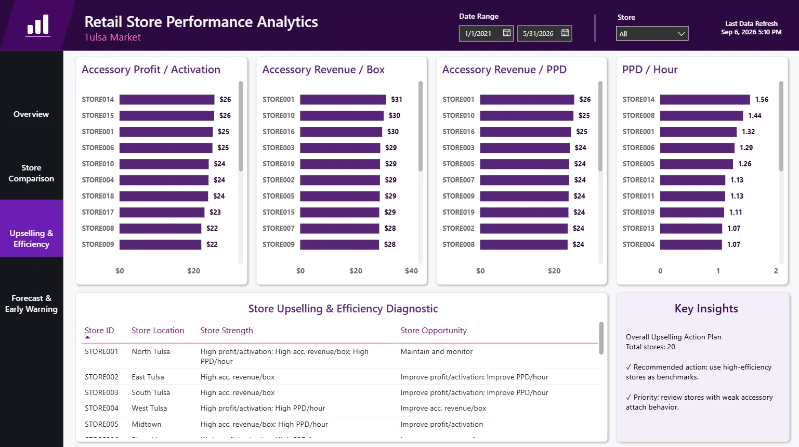
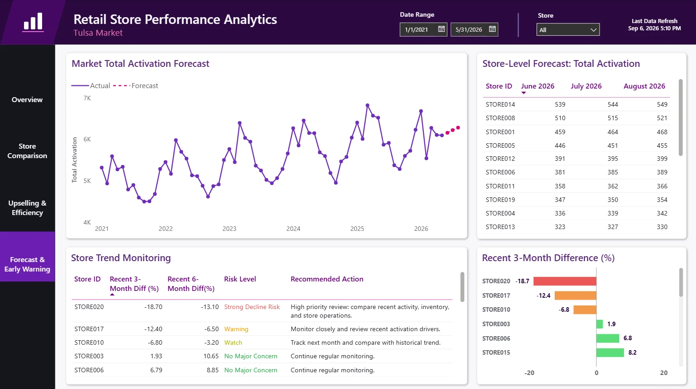

RETAIL ANALYTICS · PRACTICUM
From messy store reports to a decision-support dashboard.
This practicum project helped managers in the Tulsa market see where store performance was improving, weakening, or behaving differently, and where to start investigating. The original project covered 10 Tulsa stores using company data; the public version uses synthetic data for 20 stores.
THE PROBLEM
Which stores need attention, and why?
- Messy reports. Daily and monthly files had inconsistent names, formats, and duplicates.
- Averages hide differences. Two stores can sell the same amount for very different reasons: volume, efficiency, or accessory sales.
- Timing matters. One month cannot show whether a store is recovering, stable, or starting to decline.
THE SOLUTION
A repeatable pipeline from raw files to early warnings.
- Clean, trusted data. Python notebooks standardize and de-duplicate every report.
- A KPI framework. Stores are compared on volume and efficiency, not just totals.
- Forecasts and flags. Models project the next three months and flag stores with recent declines.
- One dashboard. Four Power BI pages give managers a fast place to start.
WORKFLOW
How the analysis runs.
- 01Messy daily + monthly data
Raw store reports with inconsistent formatting.
- 02Cleaning & EDA
Standardize names, dates, and types; remove duplicates; explore.
- 03Data modeling
Galaxy schema in Power BI: several fact tables share Store, Date, and Month dimensions.
- 04KPI framework
Define and compare activation, gross, accessory, and productivity KPIs.
- 05Upselling & efficiency
Segment stores by volume vs. efficiency.
- 06Forecasting
Project monthly activations with Prophet, XGBoost, and statsmodels.
- 07Early warning
Flag stores whose recent trend is slipping.
- 08Power BI
Publish four dashboard pages for managers.
The public repository uses synthetic data that follows the structure of the original practicum data. The company-provided data remains confidential.
DATA MODEL
One model behind all four dashboard pages.
The Power BI model is a galaxy schema (a star schema with several fact tables). Five day-wise fact tables (activations, new activations, upgrades, accessory profit, and account gross) plus forecast, early-warning, and KPI tables all connect to shared Store, Date, and Month dimensions, so every page filters the same way.

WORK IN MOTION
The dashboard, page by page.

Overview
The market at a glance, filtered by date range and store.
- Headline KPIs: total activations, account gross, accessory profit, PPD, and productivity
- Monthly activation trend and a store ranking by activations
- Auto-generated key insights: highest and lowest stores for gross and accessory profit

Store comparison
Answers “Is this store big, efficient, or both?”
- Summary table with each store's totals and performance category
- Volume vs. efficiency scatter that sorts stores into four groups
- Account gross and accessory profit side by side for every store

Upselling & efficiency
Shows where each store can add value per customer.
- Accessory profit per activation, revenue per box, revenue per PPD, and PPD per hour
- A diagnostic table listing each store's strengths and opportunities
- An action plan: use high-efficiency stores as benchmarks

Forecast & early warning
Looks ahead and flags trouble early.
- Market activation forecast for the next three months
- Store-level forecasts for June to August 2026
- Risk levels from recent 3- and 6-month changes, each with a recommended action
WHAT I EMPHASIZE
Differences that change decisions.
Useful store analysis goes beyond relationships that are true by construction. The better questions are comparative: why one store turns activity into stronger results, where efficiency lags despite high volume, and which combinations of indicators signal an emerging problem.